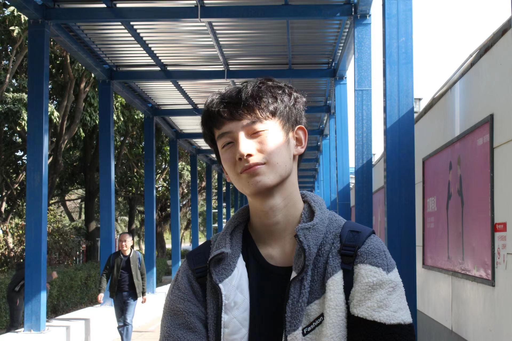

|  | Liheng Tan College of Management and Economics Tianjin University, China. Email:tan_liheng@outlook.com CV |
About Me
Hi! I am an junior undergraduate student at Tianjin University. I was fortunate to be advised by Prof. Chundong Zheng in the field of marketing in 2020. I have also worked closely with Prof. Yuan Chen in the field of operations management since 2021. I am broadly interested in various topics in Operations Management and Operations Research. I believe Management Science can make our world a better place. I am a recipient of the National Scholarship(2020). I will be applying for IEOR/OM/SE PhD in Fall 2023, feel free to contact me.
News
[July 2022] Welcome to my page!
Research Interests
Decision and Risk Analysis
Operations Research
Pricing and Revenue Management
Organizations, Technology and Entrepreneurship
Education
Tianjin University
B.E. In Construction Management
September 2019 to NOW
Average Score: 92.5/100 GPA: 3.88/4.0
Publications
-
A multiple-objective decision-support model for lighting maintenance routing problems considering carbon dioxide emissions and balanced workload
Liheng Tan, Yuxuan Zhang, Yuan Chen*
Under Review, 2022
Internships
-
CITIC Securities (Beijing) Co., Ltd. (2021.12-2022.04)
Intern, Fixed Income Group, Full Time
Macroeconomics Analysis and Data Analysis
-
CITIC Securities (Shenzhen) Co., Ltd. (2021.07-2021.08)
Intern, Integrated Business Group, Investment Banking Department, Full Time
Assisting a semiconductor company for IPO
Competitions
Global Top 30 Teams, with 10,000+ participants, Project Management Institute Make Reality Challenge
National Gold Medal, ‘Youth Innovation’ National College Students Innovation and Entrepreneurship Competition
Honorable Mention, Mathematical Contest in Modeling, 2022
First Prize, China-ASEAN Collaborative Innovation Competition, 2021
National Excellent Team Award, ‘Eastmoney Cup’ Competition, 2021
National Top 10 Practice Team, China Youth Daily, 2021
Tianjin Regional Third Prize, ‘Internet+’ Innovation and Entrepreneurship Competition, 2020
Awards and Honors
Excellent Student Award, awarded by Tianjin University, 2021
Jinlongyu Scholarship, awarded to Top 2 excellent 19, undergraduates by Tianjin University, 2021
2021 CIOB Excellent Student Member, awarded to Top 6 excellent student members in China by CIOB, 2021
National Scholarship, awarded to Top 2% of excellent undergraduates by Tianjin University, 2021
Outstanding Innovation and Entrepreneurship Individual Award, awarded by Tianjin University, 2021
Excellent Student Leader Award, awarded by Tianjin University, 2020
Outstanding Social Practice Individual Award, awarded by Tianjin University, 2020